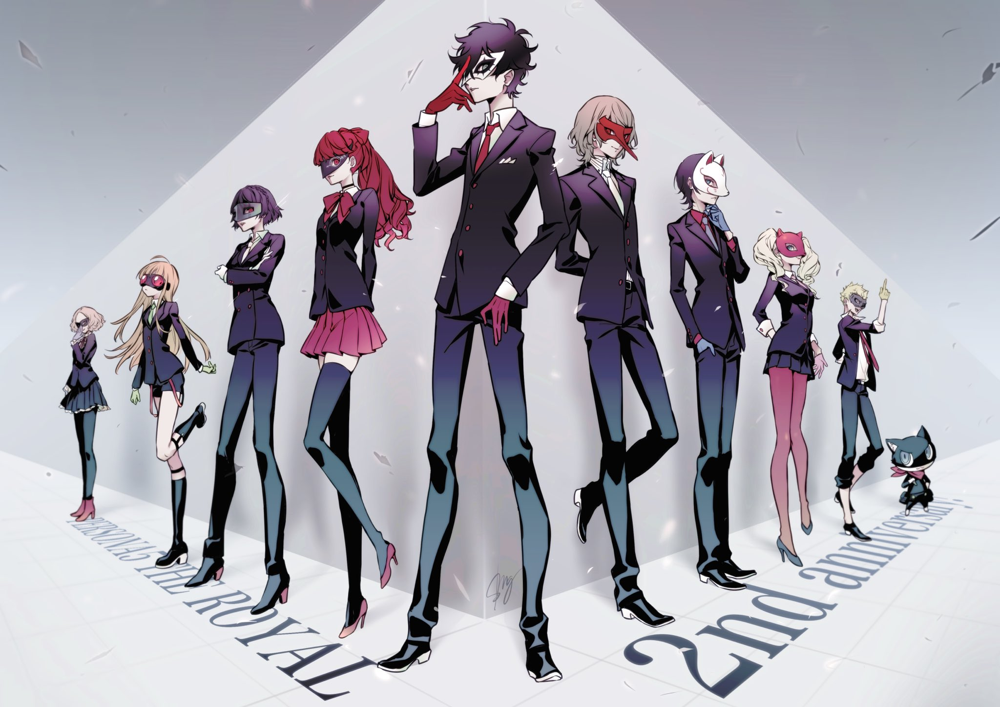
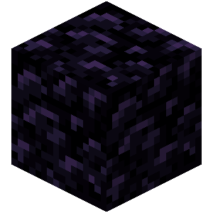

Mijn projecten
Ik heb onder andere meegewerkt aan een aantal minecraft bedrock edition servers. Ook heb ik mijn eigen roblox games gemaakt. Hierdoor heb ik een beetje ervaring met coderen, maar niet zoveel.
Ik ben Boaz, Ik ben 16 jaar. Ik ben geboren in Rotterdam, Maar ik woon in Barendrecht. Ik woon thuis met mijn 2 zusjes, mijn broertje, en mijn vader en moeder. Mijn hobby's zijn: Gamen, Anime kijken, Cosplayen, Shoppen en Pokemon- en Yu-gi-oh- -Kaarten verzamelen.

Ik heb onder andere meegewerkt aan een aantal minecraft bedrock edition servers. Ook heb ik mijn eigen roblox games gemaakt. Hierdoor heb ik een beetje ervaring met coderen, maar niet zoveel.

Ik was Admin op een engelse minecraft server genaamd Crafty PVP, het was super populair geworden, waardoor het af en toe wel moeilijk was om in de server te komen. Het was super leuk dat ik voor die server admin mocht zijn maar helaas was de server te duur geworden om open te houden dus moest hij afgesloten worden.

Een andere minecraft server waar ik admin voor ben/was heet Starburst Smp. Het was een Server die gescripted was net zoals The Unstable SMP. Iedereen die erop speelt heeft zijn eigen lore en backstory. Soms hadden 2 mensen dezelfde backstory maar dat was dan omdat ze er zelf voor hadden gekozen.